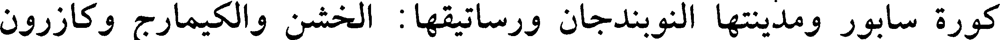
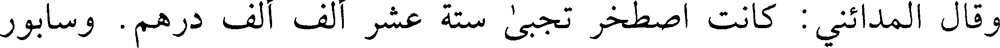
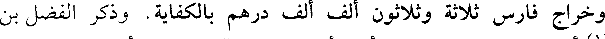
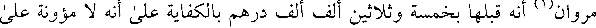
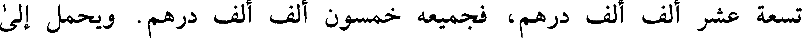
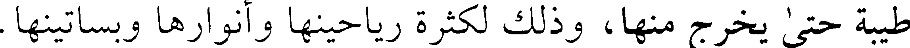
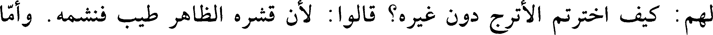
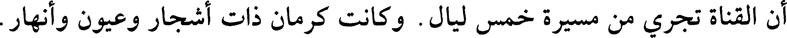
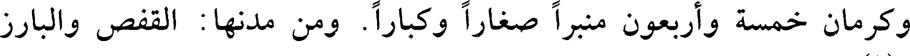
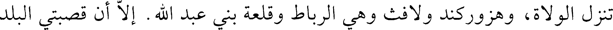

000204.gt.txt

منه ماء يشبه بالعرق من حجارته فيكون منه هذا المومياي الأبيض الجيد. وعلى هذا
000205.gt.txt

الكهف باب حديد وحفظة ويغلق ويختم بخاتم السلطان وقاضي البلد إلى يوم من
000206.gt.txt

السنة يفتح فيه. ويجتمع القاضي وشيوخ البلد حتى يفتح بحضرتهم ويدخل إليه
000207.gt.txt

407
000208.gt.txt

وكتب أحمد بن الضحاك الفلكي (1) إلى صديق يصف شعب بوان: كتبت
000209.gt.txt

إليك من شعب بوان وله عندي يد بيضاء مذكورة، ومنة غراء مشهورة بما أولانيه
000210.gt.txt

من منظر أعدى على الأحزان، وأقال من صروف الزمان. وسرح طرفي في جداول
000211.gt.txt

تطرد بماء معين منسكب، أرق من دموع العشاق، حررتها لوعة الفراق. وأبرد من
000212.gt.txt

ثغور الأحباب، عند الالتثام. كأنها حين [91 ب] جرى آذيها يترقرق، وتدافع
000213.gt.txt

تيارها يتدفق. وارتج حبابها يتكسر في خلال زهر ورياض ترنو بحدق تولد قصب
000214.gt.txt

لجين في صفائح عقيان، وسموط در بين زبرجد ومرجان. أثر على حكمة صانعه
000215.gt.txt

شهيد، وعلم على لطف خالقه دليل. إلى ظل سجسج أحوى، وخضل ألمى. قد
000216.gt.txt

غنت عليه أغصان فينانة وقضب غيدانة. تشورت لها القدود المهفهفة خجلا،
000217.gt.txt

وتقيلتها الخصور المرهفة تشبها. يستقيدها النسيم فتنقاد، ويعدل بها فتنعدل. فمن
000218.gt.txt

متورد يروق منظره، ومرتج يتهدل مثمره. مشتركة فيه حمرة نضج الثمار، بنفحة
000219.gt.txt

نسيم النوار. وقد أقمت به يوما لخيالك منادما ولشوقك مسامرا. وشربت لك
000220.gt.txt

تذكارا. وإذا تفضل الله بإتمام السلامة إلى أن أوافي شيراز، كتبت إليك من خبري
000221.gt.txt

بما تقف عليه إن شاء الله.
000222.gt.txt

ومن النوبندجان إلى شيراز نيف وعشرون فرسخا.
000223.gt.txt

وهي (2) من كورة أردشير خرة ورساتيقها: جور والخبر والصيحكان والبرجان
000224.gt.txt

والكهرجان والخواروستان وكير وسينيز وسيراف والرويحان وكان فيروز وكازرون
000225.gt.txt

وكران وابزر وتوج.
000226.gt.txt

ومن سوق الأهواز إلى الدورق في الماء ثمانية عشر فرسخا، وعلى الظهر
000227.gt.txt

أربعة وعشرون فرسخا.
000228.gt.txt

409
000229.gt.txt

كورة سابور ومدينتها النوبندجان ورساتيقها: الخشن والكيمارج وكازرون
000230.gt.txt

وخره وبندر همان ودشت بارين والهنديجان والدرخوند وتنبوك والجواندان والميدان
000231.gt.txt

والمذار وماهان والجنيد والرامجان والشاهجان ومور ودادين وخمايجان السفلى
000232.gt.txt

وخمايجان العليا وتيرمردان وجنحان والسياه مص وانبوران.
000233.gt.txt

كورة إصطخر والمدينة ورساتيقها: مدينة البيضاء وبهران وأسار وإيرج
000234.gt.txt

ومائين وخبر إصطخر ونيرز وأبرقويه والبرانجان والميان روذان والكاسكان والهزار.
000235.gt.txt

ومن شيراز إلى مدينة فسا ثلاثون فرسخا. ومن مدينة فسا إلى مدينة داربجرد
000236.gt.txt

ثمانية عشر فرسخا ورساتيقها: كرم وجهرم ونيريز والفستجان والابجرد والانديان
000237.gt.txt

وجويم وفرج ويارم وطسان.
000238.gt.txt

كورة أرجان ورساتيقها: قاش وريشهر والسلجان والبحار وفرزن (1).
000239.gt.txt

ومن شيراز إلى مدينة [92 أ] جور عشرون فرسخا وبين شيراز وسابور
000240.gt.txt

عشرون فرسخا. وبين شيراز واصطخر اثنا عشر فرسخا.
000241.gt.txt

زموم (2) الأكراد بفارس وتفسير الزموم محال الأكراد. قال صاحب كتاب
000242.gt.txt

المسالك والممالك وهو عبد الله بن محمد بن خرداذبه: هي أربعة زموم: زم
000243.gt.txt

الحسين بن جيلويه ويسمى البازنجان، وهو من شيراز على أربعة عشر فرسخا. وزم
000244.gt.txt

ازدم بن جوانانه من شيراز على ستة وعشرين فرسخا. وزم القاسم بن شهريار
000245.gt.txt

ويسمى الكوريان، من شيراز على خمسين فرسخا. وزم الحسين بن صالح يسمى
000246.gt.txt

السوران من شيراز على سبعة فراسخ.
000247.gt.txt

وقال المدائني: كانت اصطخر تجبى ستة عشر ألف ألف درهم. وسابور
000248.gt.txt

410
000249.gt.txt

أربعة عشر ألف ألف درهم. وأردشير خرة ثمانية عشر ألف ألف درهم. ودارابجرد
000250.gt.txt

ثمانية عشر ألف ألف درهم.
000251.gt.txt

وكانت أرجان بعضها إلى إصبهان وبعضها إلى اصطخر وبعضها إلى رام
000252.gt.txt

هرمز. فصيرت في الإسلام كورة واحدة.
000253.gt.txt

فصارت فارس خمس كور وهي إصطخر وشابور وأردشيرخره ودارابجرد
000254.gt.txt

وفسا وأرجان. وفارس مائة وخمسون في فرسخا في مثلها.
000255.gt.txt

وافتتحت عنوة على يدي أبي موسى الأشعري وعثمان بن أبي العاص رضي
000256.gt.txt

الله عنهما.
000257.gt.txt

ويقال إن نمرود إبراهيم عليه السلام من إصطخر. ويقال بل كان من قرية
000258.gt.txt

يقال لها أبرقوية.
000259.gt.txt

وخراج فارس ثلاثة وثلاثون ألف ألف درهم بالكفاية. وذكر الفضل بن
000260.gt.txt

مروان (1) أنه قبلها بخمسة وثلاثين ألف ألف درهم بالكفاية على أنه لا مؤونة على
000261.gt.txt

السلطان. وجباها الحجاج بن يوسف والأهواز ثمانية عشر ألف ألف درهم. وكان
000262.gt.txt

عمرو بن الليث يجبي من خراجها إحدى وثلاثين ألف ألف درهم، ومن ضياعها
000263.gt.txt

تسعة عشر ألف ألف درهم، فجميعه خمسون ألف ألف درهم. ويحمل إلى
000264.gt.txt

السلطان في كل سنة خمسة عشر ألف ألف درهم. وجباها الناصر في سنة ثمان
000265.gt.txt

وسبعين ومائتين ستين ألف ألف درهم. وكانت الفرس قسطت على كور فارس
000266.gt.txt

أربعين ألف ألف مثاقيل.
000267.gt.txt

411
000268.gt.txt

ومن العجائب بفارس شجرة تفاح بشيراز، نصف التفاحة حلو في نهاية
000269.gt.txt

الحلاوة ونصفها حامض في غاية الحموضة. وليس بفارس كلها من هذا النوع إلا
000270.gt.txt

هذه الشجرة الواحدة.
000271.gt.txt

ولهم سابور وفيها الأدهان الكثيرة ومن [92 ب] دخلها لم يزل يشم ريحا
000272.gt.txt

طيبة حتى يخرج منها، وذلك لكثرة رياحينها وأنوارها وبساتينها.
000273.gt.txt

ولهم جور وبها يعمل الماورد الجوري وهو النهاية من الماورد.
000274.gt.txt

ولهم الثياب السينيزية (1) والجنابية والنوزية والسابورية. وهم أحذق الناس
000275.gt.txt

باتخاذ المرايا والمجامع وغير ذلك من الآلات الحديد.
000276.gt.txt

وقال الأصمعي: حشوش الدنيا ثلاثة: عمان والأبلة وسيراف.
000277.gt.txt

412
000278.gt.txt

القول في كرمان
000279.gt.txt

قال ابن الكلبي: سميت كرمان بكرمان بن فلوج من بني ليطي بن يافث بن
000280.gt.txt

نوح عليه السلام. ويقال إن بعض ملوك الفرس أخذ قوما فلاسفة (1) فحبسهم وقال:
000281.gt.txt

لا يدخل إليكم إلا الخبز وحده وخيروهم في إدام واحد. فاختاروا الأترج فقيل
000282.gt.txt

لهم: كيف اخترتم الأترج دون غيره؟ قالوا: لأن قشره الظاهر طيب فنشمه. وأما
000283.gt.txt

داخله ففاكهة. وأما حماضة فأدم، وأما حبة فدهن. فأمر بهم فاسكنوا كرمان.
000284.gt.txt

وكان ماؤها لا يخرج إلا على خمسين ذراعا. فهندسوه حتى أظهروه على وجه
000285.gt.txt

الأرض. ثم غرسوا بها الأشجار فالتفت كرمان كلها بالشجر. فعرف الملك ذلك
000286.gt.txt

فقال: اسكنوهم الجبال فاسكنوها، فعملوا الفوارات وأظهروا الماء على رؤوس
000287.gt.txt

الجبال فقال الملك: اسجنوهم. فعملوا في السجن الكيمياء. وقالوا: هذا علم لا
000288.gt.txt

نخرجه إلى أحد. وعملوا منه ما علموا أنه يكفيهم مدة أعمارهم ثم أحرقوا كتبهم
000289.gt.txt

وانقطع علم الكيمياء
000290.gt.txt

وقال بعض علماء الفرس: كانت الأكاسرة تجبي السواد مائة ألف ألف
000291.gt.txt

وعشرين ألف ألف درهم سوى ثلاثين ألف ألف من الوضائع لموائد الملوك.
000292.gt.txt

وكانوا يجبون فارس أربعين ألف ألف. وكانوا يجبون كرمان ستين ألف ألف
000293.gt.txt

لسعتها. وهي ثمانون ومائة فرسخ في مثلها. وكانت كلها عامرة. وبلغ من عمارتها
000294.gt.txt

أن القناة تجري من مسيرة خمس ليال. وكانت كرمان ذات أشجار وعيون وأنهار.
000295.gt.txt

ومن شيراز إلى مدينة السيرجان، مدينة كرمان، أربعة وستون فرسخا.
000296.gt.txt

413
000297.gt.txt

وكرمان خمسة وأربعون منبرا صغارا وكبارا. ومن مدنها: القفص والبارز
000298.gt.txt

والمراح (1) والبلوص [93 أ] وجيرفت - وهي من أعظم مدنها - والسيرجان وبها
000299.gt.txt

تنزل الولاة، وهزوركند ولافث وهي الرباط وقلعة بني عبد الله. إلا أن قصبتي البلد
000300.gt.txt

جيرفت والسيرجان.
000301.gt.txt

قال: وبكرمان مدينة يقال لها دمندان، وهي مدينة كبيرة واسعة وبها أكثر
000302.gt.txt

معادن كرمان، بها معادن الحديد والنحاس والذهب والفضة والنوشادر والصفر
000303.gt.txt

ومعدنه بجبل يقال له دنباوند، مرتفع شاهق، ارتفاعه ثلاثة فراسخ. وهذا الجبل